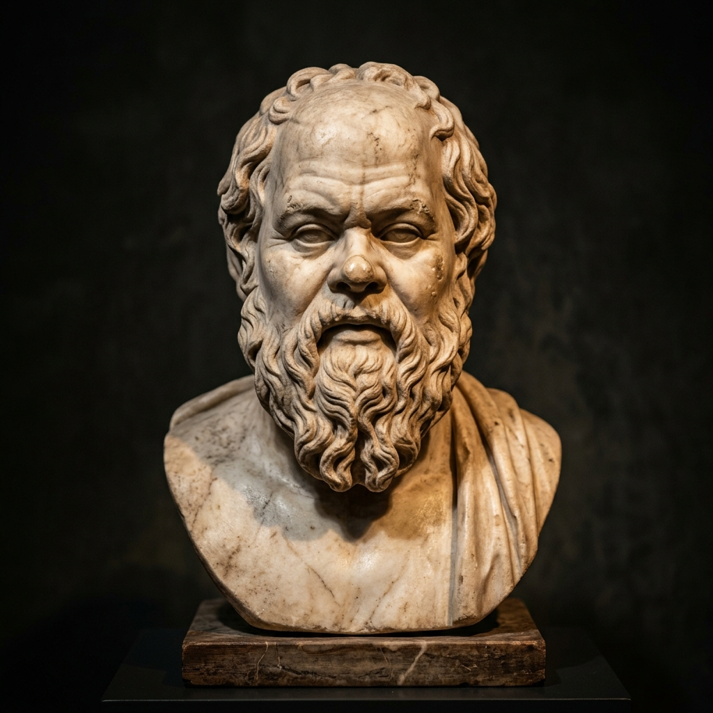

في حياة كل إنسان لحظات يشعر فيها بالضعف، أو الخوف، أو الشك في نفسه. قد تكون كلمة جارحة، أو فشلًا، أو خيانة، أو خسارة تجعل الإنسان يعتقد أنه لم يعد قادرًا على الاستمرار.
لكن الفيلسوف الألماني فريدريش نيتشه (Friedrich Nietzsche) كان يرى أن هذه اللحظات ليست نهاية الطريق، بل بدايته. فالقوة الحقيقية لا تُولد مع الإنسان، بل تُصنع من خلال مواجهة الألم، وتحمل المسؤولية، والاستمرار رغم الصعوبات.
في هذا المقال، سنتعرف على أهم الدروس التي يقدمها نيتشه لبناء شخصية قوية ومستقلة.
📌 من هو فريدريش نيتشه؟
ولد نيتشه عام 1844 في ألمانيا، ويُعد من أكثر الفلاسفة تأثيرًا في العصر الحديث. اشتهر بانتقاده للأفكار التقليدية، ودعوته إلى أن يصنع الإنسان قيم بنفسه، وألا يعيش أسيرًا لآراء الآخرين.
ترك مؤلفات أصبحت من أشهر كتب الفلسفة، مثل:
- هكذا تكلم زرادشت (Also sprach Zarathustra)
- ما وراء الخير والشر (Jenseits von Gut und Böse)
- أفول الأصنام (Götzen-Dämmerung)
- إنسان مفرط في إنسانيته (Menschliches, Allzumenschliches)
🦅 الدرس الأول: الألم ليس عدوًا
كان نيتشه يرى أن معظم الناس يحاولون الهروب من الألم، بينما الإنسان القوي يتعلم منه. فكل تجربة صعبة تضيف إلى الشخصية شيئًا جديدًا: صبرًا، أو حكمة، أو شجاعة.
الألم لا يحدد مستقبلك، بل الطريقة التي تتعامل بها معه.
🌱 الدرس الثاني: لا تعش لإرضاء الجميع
أحد أكبر أسباب التعاسة هو محاولة إرضاء الجميع. ستجد دائمًا من ينتقدك مهما فعلت. لذلك كان نيتشه يدعو الإنسان إلى أن يعيش وفق قناعاته، لا وفق توقعات الآخرين.
عندما تجعل رضا الناس هدفك، تفقد نفسك تدريجيًا.
⚔️ الدرس الثالث: اصنع قيمك بنفسك
لا تجعل المجتمع يحدد لك معنى النجاح أو السعادة. قد يرى الناس أن النجاح هو المال أو الشهرة، بينما تجد أنت سعادتك في العلم أو الفن أو خدمة الآخرين.
القيمة الحقيقية هي أن تعيش حياة تشبهك، لا حياة تشبه الآخرين.
🛡️ الدرس الرابع: لا تخف من الفشل
الفشل ليس دليلًا على ضعفك، بل هو جزء طبيعي من طريق النجاح. كل إنسان عظيم أخطأ، لكنه لم يسمح لأخطائه بأن توقفه.
الفرق بين الناجح والفاشل ليس عدد السقطات، بل عدد مرات النهوض.

🔥 الدرس الخامس: واجه مخاوفك بشجاعة
الخوف يكبر عندما تهرب منه، أما عندما تواجهه، يبدأ بالتلاشي. قد تخاف من التغيير، أو من الفشل، أو من كلام الناس.
لكن الشجاعة لا تعني غياب الخوف، بل تعني أن تتحرك رغم وجوده.

🧠 ماذا يقول علم النفس الحديث؟
تؤكد الدراسات الحديثة في علم النفس الإيجابي أن الأشخاص الذين ينظرون إلى الصعوبات باعتبارها فرصًا للتعلم يصبحون أكثر قدرة على التكيف، وأكثر ثقة بأنفسهم.
ويُعرف هذا المفهوم باسم عقلية النمو (Growth Mindset)، وهي فكرة تتقاطع تماماً مع رؤية نيتشه بأن الإنسان يتطور من خلال التحديات والمواجهة، لا من خلال الراحة الدائمة.
🌱 كيف تطبق هذه الأفكار في حياتك؟
- تقبل أن الحياة لن تكون سهلة دائمًا وأن المعاناة جزء من النمو.
- لا تجعل رأي الآخرين وتقييمهم يحدد قيمتك الذاتية.
- تعلم من أخطائك وفشلك بدلًا من الهروب منها.
- حدد أهدافًا أصيلة تعبر عن شخصيتك ورغبتك الحقيقية.
- خصص وقتًا يوميًا للتأمل ومراجعة نفسك وتقييم مسارك.

📌 الدروس المستفادة
- الألم قد يكون بداية للنضج والوعي العميق.
- الثقة بالنفس تُبنى بالأفعال والإنجازات لا بالكلمات.
- لا تجعل رضا الناس غايتك الأساسية في الحياة.
- الفشل خطوة حتمية في طريق النجاح والتميز.
- القوة الحقيقية تبدأ من الداخل وتصنع بالصبر والمواجهة.
💡 الخاتمة
لم يكن نيتشه يدعو إلى حياة خالية من المعاناة، بل إلى إنسان قادر على تحويل المعاناة إلى مصدر للقوة والتميّز.
فكل مرة تتجاوز فيها خوفًا، أو تتعلم من فشل، أو تتمسك بمبادئك رغم الصعوبات، فإنك تبني شخصية أكثر صلابة واستقلالية.
ربما لا نستطيع اختيار كل ما يحدث لنا، لكننا نستطيع دائمًا اختيار الطريقة التي نستجيب بها، وهنا تبدأ القوة الحقيقية.